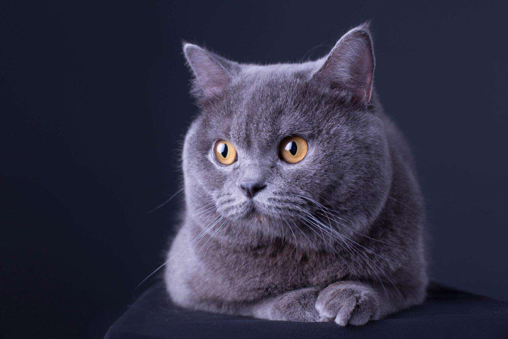

猫咪中毒输狗血续命 原来猫狗之间也有爱!
近日，一则“猫咪中毒输狗血”引发关注消息给出大家想要的答案，据报道称，近日，澳大利亚南部，一只名叫雷克斯的俄罗斯蓝猫误食鼠药后被主人送到当地动物医院抢救。
经当地宠物医生诊断后，蓝猫雷克斯中毒的反应相当剧烈，内出血严重，必须紧急输血，但医院没有现成猫血，只有狗血， 医生征求猫主人同意后，给雷克斯输狗血争取时间。宠物医生介绍称，如果两天左右没找到合适猫血血源，猫的免疫系统将会摧毁输入的狗血，幸好找到合适猫血血源，这让雷克斯续命。
加拿大宠物猫首次见蛇 反应呆萌现魔性表情
加拿大东部麦肯齐女士拍下了自家猫咪第一次看见蛇时的表现，画面非常有趣。这只呆萌的猫咪名叫TJ，6月20日主人琳赛带它去兽医诊所做检查。就在诊所里的长椅上，一条琥珀色有斑纹的蛇正盘踞在盒子上，不时发出嘶嘶的响声。
当TJ看见这条滑溜溜的蛇时，立刻愣住了。停顿一下后，它用后腿支撑身体缓缓地直立起来，过程中它始终瞪大眼睛惊讶地注视着蛇，表情有点呆呆的，看起来似乎是对蛇非常感兴趣，但又有点恐惧。
主人琳赛也对TJ的行为感到困惑，她说：“TJ是一只快乐的猫，平时非常友好。但这是它第一次遇见蛇，大概它还不知道该怎样看待蛇吧。”